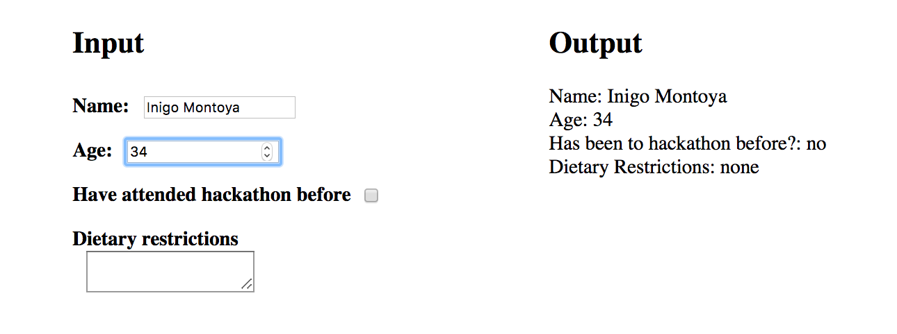

Introduction to React.js
Part 2: Forms and lifecycle methods
Found at github.
React Forms 101
Controlled v. Uncontrolled Components
- HTML form elements naturally maintain their own internal state
- However, we usually don't want to use the default HTML behavior and we usually want to be in control of the state
- If we let the HTML form elements take care of maintaining state, that's an uncontrolled component
- If we take over that state, then it's a controlled component
Controlled Components
- The component will maintain its own internal state
- Set the value attribute of the HTML element to the correct state variable (this is also true for initial or default values)
- When the input changes, handle the state change in your own function, which you'll call from onChange
- You'll be calling setState in that handle change function
- Examples:
const handleChange = (event) => { // maybe do some error handling and validation // then persist the change this.setState({ value: event.target.value }); };<input type="text" value={this.state.value} onChange={this.handleChange} /> - simple example in codepen
- Official codepen 1 and 2
- GDI codepen 1 and 2
- (Form Docs)
Uncontrolled Components
- Not recommended. Use controlled components or Redux whenever possible.
- Docs
- Use refs to store internal form state, and use setState on submit
- Use defaultValue to set initial values in form elements (input, select, etc.)
- "Controlled and uncontrolled form inputs in React don't have to be complicated"
- Official codepen
- GDI codepen
Synthetic Events
-
Remember this dude?
const handleChange = (event) => { this.setState({ value: event.target.value }); }; - When someone interacts with the page (like the user types something in a field or toggles a checkbox), an event gets fired. This is a general JS/HTML concept.
- Every browser deals with events a little bit differently. So React wraps the native browser events in a SyntheticEvent (*there are also performance implications in their implementation)
- The interface for SyntheticEvents is exactly the same as regular events, but the events work exactly the same way in all browsers.
- official docs
- offical handling events guide
- refresher on event propagation
Let's develop it!
Let's create a hackathon sign up form. We'll need to get the following information from the user:
- Name
- Age
- Have they been to the hackathon before?
- Dietary restrictions
For now, let's just print out the data that we have in a div either below or adjacent to the input section.
Example Implementation
class Greeting extends React.Component {
constructor() {
super();
this.state = {
name: '',
age: undefined,
returning: false,
dietaryRestrictions: ''
};
}
handleNameChange = (event) => {
this.setState({ name: event.target.value });
};
...
handleReturningChange = (event) => {
this.setState(prevState => {
return { returning: !prevState.returning };
});
};
render() {
const { name, age, returning, dietaryRestrictions } = this.state;
return (
<div className="multicolumn-container">
<div className="column input">
<h2>Input</h2>
<label className="input-label">
Name:
<input className="input" type="text" value={name} onChange={this.handleNameChange} />
</label>
...
<label className="input-label">
Have attended hackathon before
<input className="input" type="checkbox" value={returning} onChange={this.handleReturningChange} />
</label>
...
</div>
<div className="column output">
...
</div>
</div>
);
}
}
Asynchronous changes and setState
-
Calling setState is not guaranteed to update state synchronously. In fact, React's own docs say:
Because this.props and this.state may be updated asynchronously, you should not rely on their values for calculating the next state.
- More info